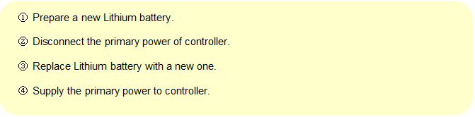
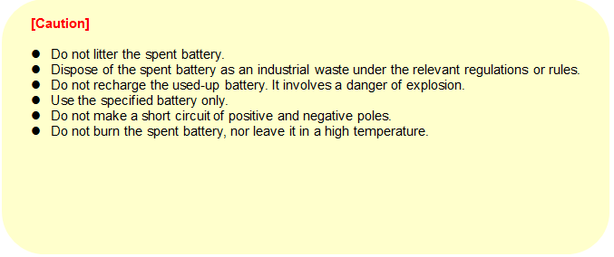

This controller is a backup battery for SRAM, and uses 3.6V Lithium battery.
Replace the battery every 2 years on a regular basis.
To prevent a damage of SRAM data, back up SRAM data first by using HRVIEW or SRAM CARD.
When replacing the battery, it can be done with the primary power is ON.

